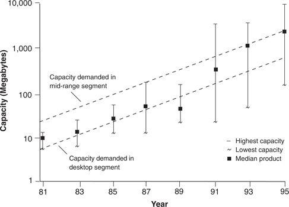

Figure 4.1 plots in more detail the upmarket movement of Seagate Technology, whose strategy was typical of most disk drive manufacturers. Recall that Seagate had spawned, and then grew to dominate, the value network for desktop computing. Its product position relative to capacity demanded in its market is mapped by vertical lines which span from the lowest-to the highest-capacity drives in its product line, in each of the years shown. The black rectangle on the line measuring each year’s capacity span shows the median capacity of the drives Seagate introduced in each of those years.
Figure 4.1 Upmarket Migration of Seagate Products

Source: Data are from various issues of Disk/Trend Report.
Between 1983 and 1985, the center of gravity of Seagate’s product line was positioned squarely on the average capacity demanded in the desktop segment. It was between 1987 and 1989 that the disruptive 3.5-inch form invaded the desktop market from below. Seagate responded to that attack, not by fighting the disruptive technology head-on, but by retreating up-market. It continued to offer models in the capacity ranges the desktop PC market demanded, but by 1993 the focus of its energy had clearly shifted to the market for mid-range computers, such as file servers and engineering workstations.
Indeed, disruptive technologies have such a devastating impact because the firms that first commercialized each generation of disruptive disk drives chose not to remain contained within their initial value network. Rather, they reached as far upmarket as they could in each new product generation, until their drives packed the capacity to appeal to the value networks above them. It is this upward mobility that makes disruptive technologies so dangerous to established firms—and so attractive to entrants.